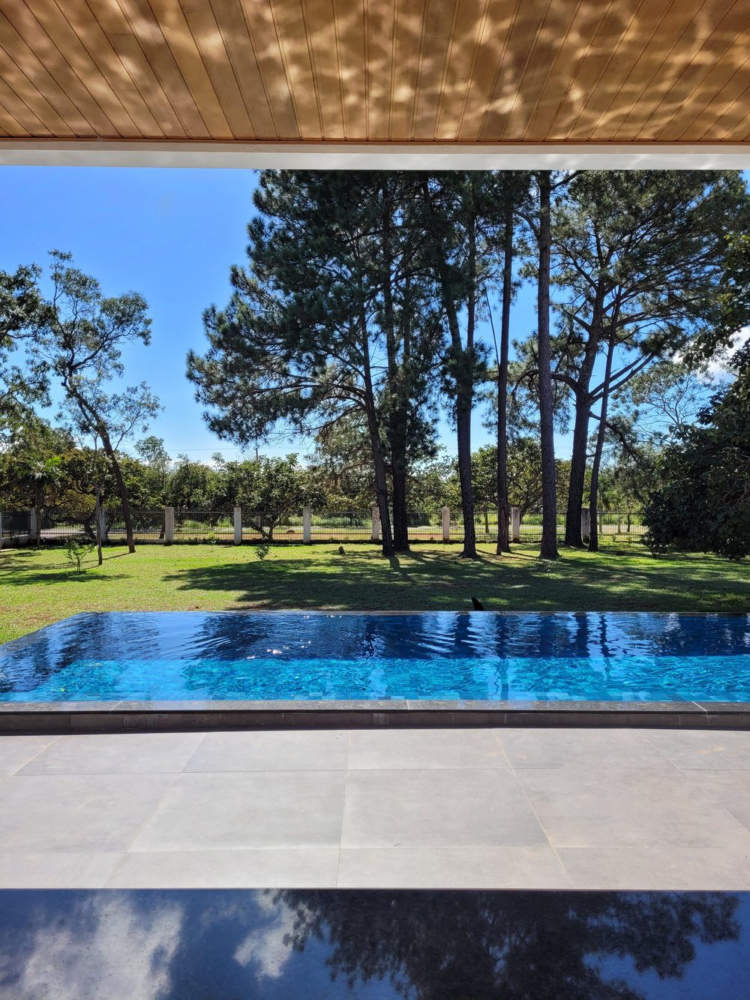
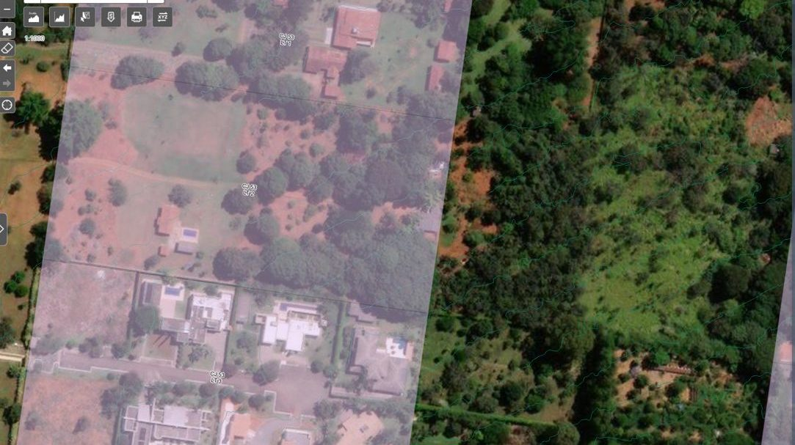
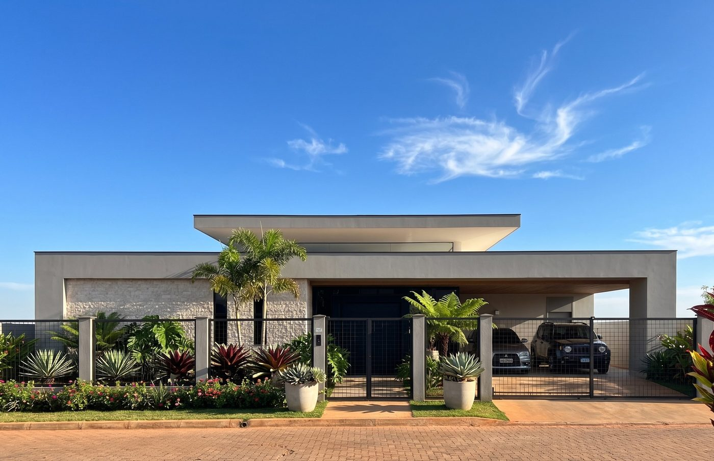
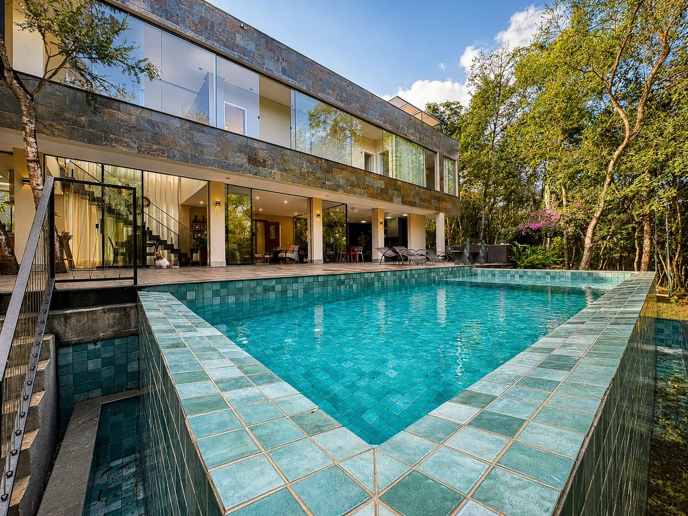
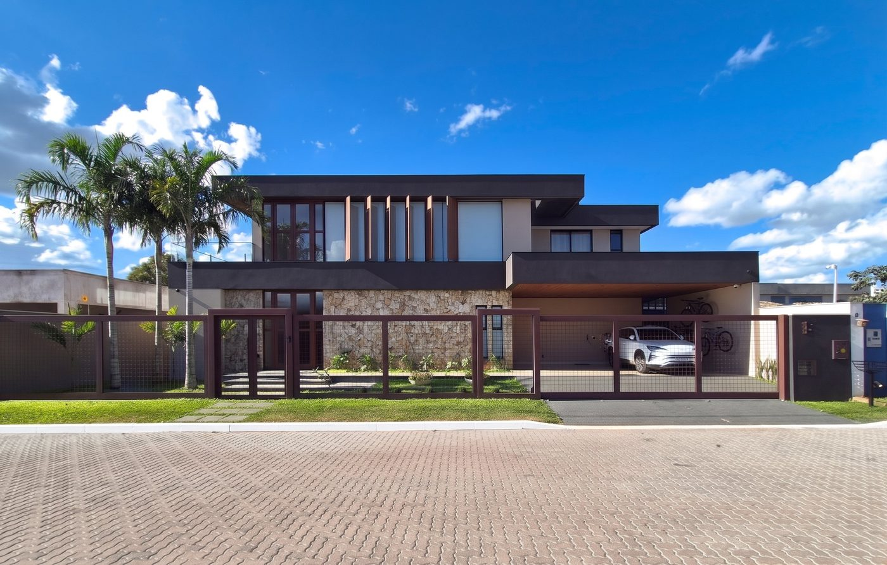

Antes de comprar o lote, saiba exatamente que casa ele permite. Analisamos sol, vistas, topografia, legislação, solo e custo de cada terreno para que a decisão mais cara da construção seja também a mais segura.
O terreno define o que a casa pode ser. Um lote com orientação errada coloca o sol da tarde dentro da sala. Um subsolo com água exige fundação cara. Um bairro escolhido por hábito pode custar a vista definitiva que vocês queriam. Depois da escritura, nada disso tem conserto.

Juntamos o que aprendemos construindo mais de 50 casas em Brasília com as ferramentas que usamos em cada projeto: Geoportal, LUOS, estudo solar e, quando necessário, sondagem do solo. O resultado é uma análise clara de cada terreno, com o lado bom e o lado ruim de cada um.
Onde nasce e onde se põe o sol em cada estação, para que a sala, a piscina e a área de lazer fiquem onde devem.

Aclive, declive ou plano: cada um pede uma casa diferente. Avaliamos muros de arrimo, cortes, aterros e a dificuldade real de construir.
Taxa de ocupação, coeficiente, afastamentos, altura, permeabilidade. O que o lote permite construir, de verdade, em cada região.
Lemos os sinais do terreno e da vizinhança. Quando há dúvida, indicamos a sondagem antes da compra, não depois.
Trabalho, escola dos filhos, lazer, deslocamentos. Conhecemos as regiões de Brasília porque construímos em quase todas elas.
Terreno + casa + acabamentos: a conta fecha? Às vezes um bairro melhor cabe com uma casa mais enxuta. Mostramos os cenários.
O mais importante: o quanto cada terreno recebe bem a casa que vocês imaginam. Vista livre pede declive e reserva; grande gramado pede terreno plano e sol bem orientado.
Situações de casais que atendemos recentemente. Nomes e endereços preservados.
A sondagem que indicamos revelou muita água no subsolo. Uma fundação profunda custaria pelo menos R$ 50 mil a mais. O casal soube disso antes de assinar qualquer contrato de obra.
Estudo de soloUm casal estava certo de que o Park Way era inviável. Ao refazer a conta da casa inteira, saíram de um lote de 1.000 m² numa região transitória para um lote de 2.000 m² com reserva ao lado, no bairro que sempre foi o sonho deles, pelo mesmo custo total.
Análise de custosTerreno plano, bonito, bem localizado. Mas a orientação jogaria o sol da tarde direto na piscina e, refletido, para dentro da sala. O estudo solar mostrou isso em minutos. O casal escolheu outro lote.
Estudo solarUm processo curto e objetivo. A nossa parte de análise é rápida; o ritmo depende das visitas, dos corretores e das escolhas de vocês. Em geral, algumas semanas.
Uma conversa parecida com um briefing de projeto: como vocês vivem, o que esperam da casa, orçamento total. Daí saem as diretrizes de busca.
ReuniãoSe ainda não têm terrenos em vista, começamos a procurar nas regiões que fazem sentido para a vida de vocês.
Até 15 opçõesNuma reunião rápida cortamos o que não serve. Opções ruins caem cedo, sem gastar visita com elas.
ReuniãoOs terrenos que sobraram passam pelas oito camadas de leitura e viram um relatório visual de cada um, com os prós e os contras.
Foco em 4 a 5Gravamos um vídeo explicando cada terreno ou fazemos uma chamada para discutir as análises com calma.
EntregaVisitamos juntos até 4 terrenos num dia, com nossas impressões finais no local. Depois acompanhamos vocês até a proposta ser aceita.
PresencialNós trazemos o olhar técnico e o conhecimento das regiões. Vocês trazem o que ninguém faz melhor: o contato direto com proprietários e corretores dos terrenos que estão vendo e a persuasão para conseguir documentos e informações. Dizemos exatamente o que pedir e para que serve.
Nada de parecer verbal que se perde. Cada terreno analisado vira material próprio, feito para ser aberto no celular e compartilhado com quem mais opina na decisão.
O Porto Dueto é um escritório de arquitetura residencial de alto padrão, de casal para casal. Projetamos e acompanhamos casas em praticamente todas as regiões nobres do DF, inclusive em condomínios em formação. É esse repertório, de quem já lidou com cada tipo de lote, que entra na análise.



Aproveitaram ao máximo um lote difícil. A casa ficou extremamente funcional, e isso vem de saber ouvir.
Identificaram nosso gosto com precisão e construíram o projeto inteiro em cima disso.
Tudo foi pensado em torno de nós. A casa é o retrato da nossa família.
Atendemos no máximo 5 casais por ano, com casas a partir de R$ 1,5 milhão de investimento em construção. Isso garante o tempo e a atenção que cada escolha de terreno merece.
Começar pela conversaPreencha e seguimos a conversa no WhatsApp. Se preferirem, marcamos uma ligação para tirar todas as dúvidas antes de qualquer decisão.
Faz, e talvez ainda mais. Analisamos os terrenos que vocês já têm em vista com a mesma profundidade e, se fizer sentido, colocamos outras opções ao lado para comparar. O preço é o mesmo com ou sem terrenos pré-escolhidos.
Não. A consultoria é um serviço independente e termina com o terreno certo em mãos. Se quiserem seguir conosco no projeto, ótimo; se não, o material é todo de vocês.
A nossa parte de análise é rápida. O que define o ritmo são as visitas, a resposta de corretores e proprietários e as escolhas de vocês. Em geral, algumas semanas do alinhamento ao dia de visitas.
A análise de topografia pelo Geoportal está incluída. A sondagem do solo é indicada quando há sinais de risco e é contratada à parte, diretamente com o engenheiro responsável, por cerca de R$ 1.800 por terreno.
Não participamos da negociação de compra. Entregamos a análise, as recomendações e a lista do que vale a pena pedir ao proprietário. A decisão e a negociação ficam com vocês.
Nosso foco são as regiões onde construímos: Lago Sul, Park Way, Jardim Botânico, Lago Norte, Taquari, SMDB e condomínios em formação nessas áreas. Para outras regiões, conversamos caso a caso.